Change how a skill behaves: more projectiles, a wider area, longer buffs and curses, extra chain hits, more summons, longer attack sequences, faster pulses or sturdier companions.
Companion Vitality →
+100% life modifier from itemsSupported companions gain more life, up to +100% from items. Shadow Warrior, Shadow Master, Ravens, bound demons, traps, Hydra, barriers and hirelings do not gain life from it. It adds no bodies.
Supported skills
All 21 skills →Get this effect


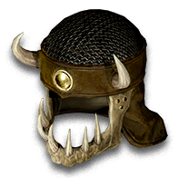
Sheltering
Magic & rare prefix
+10-20% to Summoned Companion Life- Weapon
- Helm
- Amulet
- Voodoo Heads
- Grimoire
Excludes: Orb / Hand to Hand
Affix level 18 · Required level 15
Marrowcall
Tomb Wand
+30-40% to Summoned Companion LifeRequired level 46

Azure Oil
+ Perfect Skull
- Bow / Crossbow / Knife / Scepter / Staff / Wand / Axe / Mace / Club / Hammer / Sword / Spear / Polearm
- +36-50% to Summoned Companion Life
Faster Pulse Rate →
+50% rate from itemsFaster pulses and storm spawning, up to +50% from items. Whole-frame breakpoints apply: Fissure first improves at +20%. Blizzard does not read this stat. Sanctuary also knocks back more often. Casting speed and duration stay the same.
Supported skills
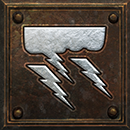
Thunder Storm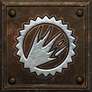
Holy Fire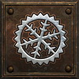
Holy Freeze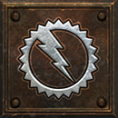
Holy Shock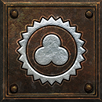
SanctuaryGet this effect

Quickening
Magic & rare prefix
+10-15% Faster Pulse Rate- Orb
- Staff
- Grimoire
- Hand to Hand
- Helm
- Gloves
- Boots
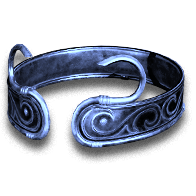
Thunder-Seer's Band
Coronet
+20% Faster Pulse RateRequired level 52
Crimson Oil
+ Perfect Skull
- Boots / Gloves / Pelt / Primal Helm / Helm / Grimoire
- +21-25% Faster Pulse Rate
Repeated Attacks →
+2 attacks or shots from itemsEach point adds one attack to a supported sequence or one shot to each sentry, up to +2 from items. Fend gains targets per sweep.
Supported skills
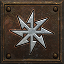
Fend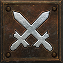
Zeal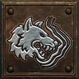
Fury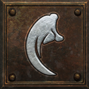
Dragon TalonGet this effect
Tripwire
Xeth → Io → Ort
3 sockets · Hand to Hand
+1 Attacks per Sequence and Shots per SentryRequired level 55

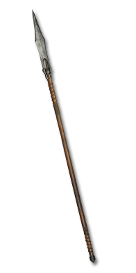
of Onslaught
Magic & rare suffix
+1 Attacks per Sequence and Shots per Sentry- Weapon
- Gloves
Excludes: Wand / Staff / Orb
Affix level 30 · Required level 25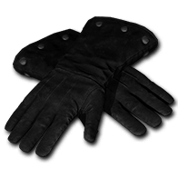
Trapwright's Grips
Sharkskin Gloves
+1 Attacks per Sequence and Shots per SentryRequired level 30

Black Oil
+ Perfect Sapphire
- Gloves / Bow / Crossbow / Hand to Hand / Knife / Axe / Mace / Club / Hammer / Sword / Spear / Polearm
- +1 Attacks per Sequence and Shots per Sentry
Projectiles →
+1 projectileEach point fires one more projectile. With none, the skill fires its usual number.
Supported skills
All 35 skills →Get this effect

of Multitudes
Magic & rare suffix
+1 to Projectiles- Missile Weapon
- Javelin
- Orb
- Staff
- Wand
- Hand to Hand
- Grimoire

The Unerring Flight
Flight Arrows
+3-5 to ProjectilesRequired level 90
Black Oil
+ Perfect Diamond
- Grimoire / Bow / Crossbow / Hand to Hand / Orb / Staff / Wand
- +1 to Projectiles
Volley weight →
+1% per pointEach extra projectile adds 35% to the volley's damage; each point adds 1% more, up to +10% from items. It needs +# to Projectiles.
Supported skills
All 22 skills →Get this effect
Naphtha
Ral → Fal → Mal
3 sockets · Any missile weapon
+13-15% Damage per Extra ProjectileRequired level 49
Weighted
Magic & rare prefix
+5-8% Damage per Extra Projectile- Missile Weapon
- Javelin
- Orb
- Staff
- Wand
- Hand to Hand
- Amulet

Rogue's Keepsake
Short Bow
+5% Damage per Extra ProjectileRequired level 12
Azure Oil
+ Perfect Amethyst
- Amulet / Bow / Crossbow / Hand to Hand / Orb / Staff / Wand
- +13-15% Damage per Extra Projectile
Area of effect →
+1 yardEach point widens the skill's area by one yard.
Supported skills
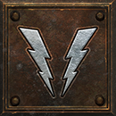
Lightning Strike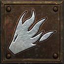
Inferno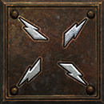
Static FieldGet this effect
Sprawling
Magic & rare prefix
+2 Yards to Area Radius- Orb
- Staff
- Wand
- Pelt
- Hand to Hand
- Voodoo Heads
- Grimoire
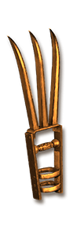
Cinderwake
Greater Talons
+1-2 Yards to Area RadiusRequired level 85Aura and curse radius →
+1 yardEach point widens the aura or curse by one yard, up to +4 yards from items.
Supported skills
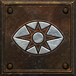
Inner Sight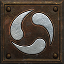
Slow Missiles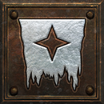
Amplify Damage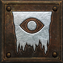
Dim Vision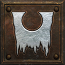
Weaken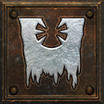
Iron MaidenGet this effect
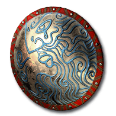
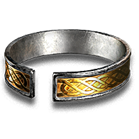
of Reach
Magic & rare suffix
+2 Yards to Aura and Curse Radius- Voodoo Heads
- Auric Shields
- Scepter
- Wand
- Amulet
- Circlet
- Amazon Item
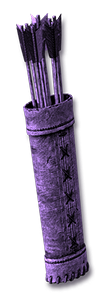
The Witch's Fletching
Hexed Arrows
+4 Yards to Aura and Curse RadiusRequired level 85Crimson Oil
+ Perfect Skull
- Amulet / Voodoo Heads / Auric Shields
- +4 Yards to Aura and Curse Radius
Chain hits →
+1 hitEach point adds one more hit to the chain.
Supported skills
All 2 skills →Get this effect
Thunderhead
Xeth → Ort → Lum
3 sockets · Orb / Staff
+2 Hits to Chain Lightning and Lightning StrikeRequired level 55of Branching
Magic & rare suffix
+1 Hits to Chain Lightning and Lightning Strike- Orb
- Staff
- Javelin
- Spear
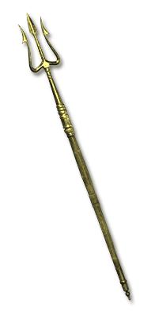
Skovos Stormtine
Stygian Pike
+1-2 Hits to Chain Lightning and Lightning StrikeRequired level 86
Black Oil
+ Perfect Topaz
- Orb / Staff / Spear
- +1 Hits to Chain Lightning and Lightning Strike
Summon limit →
+1 summonEach point lets you keep one more of that summon.
Supported skills
All 28 skills →Get this effect
of the Host
Magic & rare suffix
+1 to Maximum Summons- Voodoo Heads
- Wand
- Pelt
- Grimoire
- Orb
- Hand to Hand
- Amazon Item

Snarekeeper's Tread
Demonhide Boots
+1 to Maximum SummonsRequired level 90Black Oil
+ Perfect Skull
- Pelt / Grimoire / Voodoo Heads / Hand to Hand / Orb / Wand
- +1 to Maximum Summons
Buff and curse duration →
+1% durationEach point makes the buff or curse last 1% longer.
Supported skills
All 69 skills →Get this effect
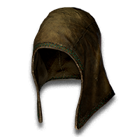
Lingering
Magic & rare prefix
+10-15% Buff and Curse Duration- Pelt
- Primal Helm
- Helm
- Gloves
- Boots
- Circlet
- Hand to Hand
The Witch's Fletching
Hexed Arrows
+20-40% Buff and Curse DurationRequired level 85Azure Oil
+ Perfect Skull
- Boots / Gloves / Pelt / Primal Helm / Helm / Hand to Hand
- +16-20% Buff and Curse Duration